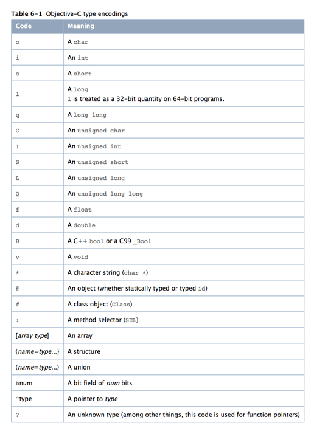

runtime的理解（一）
主要内容
- runtime 是什么
- runtime 的消息机制
是什么
* *OC 是在C语言的基础上进行的扩展和封装。对于C语言，调用未实现的函数在编译阶段就会报错，而对于OC语言，调用的只要是声明过的函数，在编译阶段不会报错，在运行阶段才会报错。这就是OC的动态性的一个体现，并且C语言是面向过程的语言，而OC是面向对象的编程语言，OC对C语言的这些扩展的核心就是 runtime。
* *runtime 简称运行时，主要由C和汇编编写，是OC面向对象和动态机制的基础，其的核心是 消息机制。在使用的过程中，我们可以参考官方Api。
消息机制
objc_class
* *Cocoa Touch 中几乎所有的类中都继承自 NSObject 类（另一个是 NSProxy 类），在 NSObjcet 中存在一个 Class 的 isa 指针。
1 | typedef struct objc_class *Class; |
* *Objective-C 的类也是由 Class 类型来表示的，它实际上是一个指向 objc_class 结构体的指针。查看 objc/runtime.h 中 objc_class 结构体的定义如下：
1 | struct objc_class { |
方法选择器
* ***@selector (SEL)：是一个SEL方法选择器。SEL** 其主要作用是快速的通过方法名字查找到对应方法的函数指针，然后调用其函数。SEL其本身是一个Int类型的地址，地址中存放着方法的名字。一个方法对应着一个SEL，所以一个类中不能存在2个名称相同的方法。
消息传递
* *例如执行代码： [person eat]; ，底层就是调用 [person performSelector:@selector(eat)]; 方法，然后编译器再将代码转化为objc_msgSend(person, @selector(eat));。
- 在 objc_msgSend 函数中。首先通过 person 的isa指针找到 person 对应的 Class。在 class 中先去 cache 中通过 SEL 查找对应函数 method，如果找到则通过 method 中的函数指针跳转到对应的函数中去执行。
- 若 cache 中未找到。再去 methodList 中查找。若能找到，则将method加入到cache中，以方便下次查找，并通过method中的函数指针跳转到对应的函数中去执行。
- 若 methodlist 中未找到，则去 superClass 中查找。若能找到，则将 method 加入到 cache 中，以方便下次查找，并通过method中的函数指针跳转到对应的函数中去执行。若依然未找到，就要消息转发。
消息转发
* *消息转发包含动态方法解析、备用接收者、完整消息转发三部分，也是程序报错前最后的三次机会。
动态方法解析
* *在消息传递到根类仍然找不到方法的时候，消息转发，调用+resolveInstanceMethod:或者+resolveClassMethod:方法。重写此方法，并利用class_addMethod(Class _Nullable cls, SEL _Nonnull name, IMP _Nonnull imp, const char * _Nullable types)方法来添加新的方法接受消息。1
2
3
4
5
6
7
8
9
10
11
12
13
14
15
16
17
18
19
20- (void)testDynamicMethod
{
[self performSelector:@selector(justTest:) withObject:@"testStr"];
// [DITRuntimeViewController performSelector:@selector(justClassTest:) withObject:@"classTestStr"];
}
+ (BOOL)resolveInstanceMethod:(SEL)sel
{
if (sel == @selector(justTest:))
{
class_addMethod([self class], sel, (IMP)justTestMethod, "v@:@");
return YES;
}
return [super resolveInstanceMethod:sel];
}
void justTestMethod(id self, SEL _cmd, id str) {
NSLog(@"%@的%@方法动态实现了，参数为：%@", self, NSStringFromSelector(_cmd), str);
}* 关于
class_addMethod(Class _Nullable cls, SEL _Nonnull name, IMP _Nonnull imp, const char * _Nullable types)方法，四个参数代表的意思，*cls : 表示给哪个类添加方法，这里是指当前控制器；SEL name: 表示要添加方法的 sel，即是传进来的参数 sel。IMP imp : 表示要添加的方法的实现，方法名可与未找到的方法的名字（sel）相同，方法的实现默认带有两个隐式参数， self : 方法调用者 _cmd : 调用方法的 SEL。types : 表示方法类型，需要用特定符号，系统提供的例子中使用的是**”v@:”**，各符号所代表的类型如下图：备用接收者
* *在调用+resolveInstanceMethod: 或者 +resolveClassMethod:方法返回NO的时候，就会调用- forwardingTargetForSelector:方法，重写此方法，返回备用接收者即可。1
2
3
4
5
6
7
8
9
10
11
12
13
14
15#pragma mark - 备用接受者
- (void)testForwardingReceiver
{
[self performSelector:@selector(justTestForwarding:) withObject:@"testStr"];
}
- (id)forwardingTargetForSelector:(SEL)aSelector
{
if (aSelector == @selector(justTestForwarding:))
{
return [[DITForwardingTest alloc] init];
}
return [super forwardingTargetForSelector:aSelector];
}完整消息转发
* *在调用- forwardingTargetForSelector:方法返回 nil 的时候，就会启用完整的消息转发机制。首先它会发送-methodSignatureForSelector:消息获得函数的参数和返回值类型。如果-methodSignatureForSelector:返回nil ，runtime 则会发出-doesNotRecognizeSelector:消息，程序报 unrecognized selector 错。如果返回了一个函数签名，runtime 就会创建一个 NSInvocation 对象并发送-forwardInvocation:消息给目标对象。1
2
3
4
5
6
7
8
9
10
11
12
13
14
15
16
17
18
19
20
21
22
23
24
25
26
27
28
29
30
31#pragma mark - 完整消息转发
- (void)testMethodSignature
{
[self performSelector:@selector(justTestMethodSignature:) withObject:@"testMethodSignatureStr"];
}
- (NSMethodSignature *)methodSignatureForSelector:(SEL)aSelector
{
if (aSelector == @selector(justTestMethodSignature:))
{
return [NSMethodSignature signatureWithObjCTypes:"v@:"];
}
return [super methodSignatureForSelector:aSelector];
}
- (void)forwardInvocation:(NSInvocation *)anInvocation
{
SEL sel = anInvocation.selector;
DITForwardingTest *methodSignatureTest = [[DITForwardingTest alloc] init];
if ([methodSignatureTest respondsToSelector:sel])
{
[anInvocation invokeWithTarget:methodSignatureTest];
}
else
{
[anInvocation doesNotRecognizeSelector:sel];
// [super forwardInvocation:anInvocation];
}
}消息转发流程